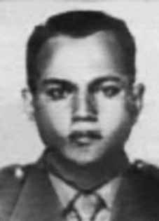

Manoel
Alves
de Oliveira
CIRCUNSTÂNCIAS DA MORTE
Manoel Alves de Oliveira morreu no dia 8 de maio de 1964, após ter sido preso e torturado por agentes da repressão no Regimento Andrade Neves – Escola de Cavalaria, localizado na Vila Militar do Rio de Janeiro –, instituição em que respondia a um Inquérito Policial Militar (IPM). ii Pesquisas apontam que sua morte está inserida no quadro de repressão instaurado no país a partir de abril de 1964, com a chamada “Operação Limpeza”iii . De acordo com o historiador Carlos Ficoiv , as notícias sobre a morte do segundosargento Manoel Alves obrigaram o general Castelo Branco a nomear seu chefe da Casa Militar, general Ernesto Geisel, para comandar uma missão de investigação a respeito das denúncias de tortura e assassinatos. O resultado das supostas investigações promovidas pelas Forças Armadas não esclareceu nenhuma das denúncias apresentadas. Desde o momento da detenção de Manoel Alves, o comando do I Exército começou a divulgar informações imprecisas, com o objetivo de encobrir os fatos relacionados ao tratamento dispensado ao sargento. Em depoimento apresentado à CEMDP, a viúva de Manoel Alves, Norma Conceição Martorelli de Oliveira, afirmou que Manoel foi detido em casa, por homens em trajes civis que o conduziram em um automóvel Kombi sem identificação oficial. Ao buscar informações junto ao I Exército a respeito do paradeiro de Manoel, Norma recebeu a falsa informação de que o sargento encontrava-se detido em um navio presídio. Apenas dois dias depois recebeu a confirmação de que o marido estava no HCE. Após um mês de buscas, Norma conseguiu autorização para visitar o marido. Um documento expedido no dia 22 de abril de 1964 confirma a prisão do sargento Manoel Alves e sua permanência no HCE. Alguns meses depois da prisão do marido, em depoimento ao jornal Correio da Manhã, Norma disse que ao ver o marido percebeu “que o seu corpo estava coberto de marcas, que mais tarde soube serem de ferro quente. Estava transformado em um verdadeiro flagelado, com a barba e os cabelos crescidos”. Um dia após a autorização concedida pelo comando do I Exército para que Norma visitasse Manoel no hospital, o coronel médico Samuel dos Santos Freitas declarou que Manoel Alves de Oliveira estava “baixado na 13ª enfermaria e devido às suas condições atuais encontra-se impossibilitado de assinar qualquer documento”. A piora nas condições físicas e psicológicas do sargento Manoel Alves de Oliveira, que até então gozava de boa saúde, aliado ao testemunho de sua esposa, pode ser interpretada como indício de que ele tenha sido submetido a tortura durante o período em que esteve preso. As pesquisas realizadas no âmbito da Comissão Nacional da Verdade identificaram no arquivo digital do Projeto Brasil: Nunca Mais documento que relata o inquérito a que foi submetido o sargento Manoel Alves no dia 7 de abril de 1964. O interrogatório foi conduzido pelo major Francisco Ursino Luna, pelo capitão Marino de Myron Cardoso e pelo segundo-tenente Newton Mousinho de Albuquerque, que na ocasião serviam no Regimento Andrade Neves, onde provavelmente o sargento foi preso, antes de ser levado ao HCE. Após apresentar um conjunto de informações acerca do depoente e dos dados fornecidos por ele, a equipe de interrogadores concluiu que “pelas constantes contradições e titubeios, pela atitude fria e passiva”, o Sargento Alves “carece de um interrogatório especializado”. Desde o momento em que foi detido, a esposa de Manoel Alves foi autorizada a vê-lo três vezes. Após ter sido proibida de visitá-lo, Norma Conceição recebeu notícias sobre o marido somente quando ele já estava morto. Ainda que as pesquisas não tenham sido capazes de reconstruir os acontecimentos de maneira plena, a análise dos documentos produzidos pelos órgãos de informações do regime militar e dos depoimentos permite afirmar que Manoel Alves morreu em decorrência da ação de agentes do Estado brasileiro, enquanto era investigado por supostos crimes políticos. Os restos mortais de Manoel Alves de Oliveira foram enterrados no Cemitério do Murundu, no Rio de Janeiro.
Manoel Alves de Oliveira died on May 8, 1964, after being arrested and tortured by agents of repression at the Andrade Neves Regiment – Cavalry School, located in Vila Militar do Rio de Janeiro –, an institution where he responded to a Military Police Inquiry (IPM). ii Research indicates that his death is part of the repression established in the country from April 1964, with the so-called “Operation Cleaning”iii. According to historian Carlos Ficoiv, the news about the death of Second Sergeant Manoel Alves forced General Castelo Branco to appoint his head of the Military House, General Ernesto Geisel, to command an investigative mission regarding allegations of torture and murders. The result of the supposed investigations carried out by the Armed Forces did not clarify any of the complaints presented. From the moment of Manoel Alves' arrest, the command of the 1st Army began to disseminate inaccurate information, with the aim of covering up the facts related to the treatment given to the sergeant. In a statement presented to CEMDP, Manoel Alves' widow, Norma Conceição Martorelli de Oliveira, stated that Manoel was detained at home by men in civilian clothes who drove him in a Kombi car without official identification. When seeking information from the First Army regarding Manoel's whereabouts, Norma received false information that the sergeant was being held on a prison ship. Just two days later she received confirmation that her husband was at HCE. After a month of searching, Norma obtained authorization to visit her husband. A document issued on April 22, 1964 confirms the arrest of Sergeant Manoel Alves and his stay at the HCE. A few months after her husband's arrest, in a statement to the Correio da Manhã newspaper, Norma said that when she saw her husband she noticed "that his body was covered in marks, which she later learned were from a hot iron. He was transformed into a true scourge, with his beard and hair grown." One day after the authorization granted by the command of the 1st Army for Norma to visit Manoel in the hospital, medical colonel Samuel dos Santos Freitas declared that Manoel Alves de Oliveira was “down in the 13th ward and due to his current conditions he is unable to sign any document”. The worsening of the physical and psychological conditions of Sergeant Manoel Alves de Oliveira, who until then had been in good health, combined with his wife's testimony, can be interpreted as evidence that he had been subjected to torture during the period in which he was imprisoned. Research carried out within the scope of the National Truth Commission identified in the digital archive of Projeto Brasil: Nunca Mais a document that reports the investigation to which Sergeant Manoel Alves was subjected on April 7, 1964. The interrogation was conducted by Major Francisco Ursino Luna, Captain Marino de Myron Cardoso and Second Lieutenant Newton Mousinho de Albuquerque, who at the time served in the Andrade Neves Regiment, where the sergeant was probably arrested, before being taken to the HCE. After presenting a set of information about the deponent and the data provided by him, the team of interrogators concluded that “due to the constant contradictions and hesitations, due to his cold and passive attitude”, Sergeant Alves “requires a specialized interrogation”. From the moment he was detained, Manoel Alves' wife was allowed to see him three times. After being banned from visiting him, Norma Conceição only received news about her husband when he was already dead. Even though the research was not able to fully reconstruct the events, the analysis of the documents produced by the military regime's intelligence agencies and the testimonies allows us to affirm that Manoel Alves died as a result of the actions of agents of the Brazilian State, while he was being investigated for alleged political crimes. The remains of Manoel Alves de Oliveira were buried in the Murundu Cemetery, in Rio de Janeiro.
Manoel Alves de Oliveira murió el 8 de mayo de 1964, tras ser detenido y torturado por agentes de represión en el Regimiento Andrade Neves –Escuela de Caballería, ubicada en la Vila Militar do Rio de Janeiro–, institución donde respondió a una Investigación de la Policía Militar (IPM). ii Investigaciones señalan que su muerte es parte de la represión instaurada en el país a partir de abril de 1964, con la llamada “Operación Limpieza”iii. Según el historiador Carlos Ficoiv, la noticia sobre la muerte del sargento segundo Manoel Alves obligó al general Castelo Branco a designar a su jefe de la Casa Militar, general Ernesto Geisel, para comandar una misión de investigación sobre denuncias de torturas y asesinatos. El resultado de las supuestas investigaciones realizadas por las Fuerzas Armadas no esclareció ninguna de las denuncias presentadas. Desde el momento de la detención de Manoel Alves, el mando del 1.º Ejército comenzó a difundir informaciones inexactas, con el objetivo de encubrir los hechos relacionados con el trato dado al sargento. En una declaración presentada al CEMDP, la viuda de Manoel Alves, Norma Conceição Martorelli de Oliveira, afirmó que Manoel fue detenido en su domicilio por hombres vestidos de civil que lo conducían en una Kombi sin identificación oficial. Cuando buscaba información del Primer Ejército sobre el paradero de Manoel, Norma recibió información falsa de que el sargento estaba retenido en un barco prisión. Sólo dos días después recibió la confirmación de que su marido estaba en HCE. Después de un mes de búsqueda, Norma obtuvo autorización para visitar a su marido. Un documento emitido el 22 de abril de 1964 confirma la detención del sargento Manoel Alves y su estancia en el HCE. Unos meses después de la detención de su marido, en declaraciones al periódico Correio da Manhã, Norma dijo que cuando vio a su marido notó "que su cuerpo estaba cubierto de marcas, que luego supo que eran de un hierro candente. Estaba transformado en un verdadero azote, con la barba y el cabello crecidos". Un día después de la autorización concedida por el comando del 1.º Ejército a Norma para visitar a Manoel en el hospital, el coronel médico Samuel dos Santos Freitas declaró que Manoel Alves de Oliveira estaba “bajado en el pabellón 13 y por sus actuales condiciones no puede firmar ningún documento”. El empeoramiento de las condiciones físicas y psicológicas del sargento Manoel Alves de Oliveira, que hasta entonces gozaba de buena salud, combinado con el testimonio de su esposa, pueden interpretarse como prueba de que había sido sometido a torturas durante el período en que estuvo encarcelado. Investigación realizada en el ámbito de la Comisión Nacional de la Verdad identificó en el archivo digital del Projeto Brasil: Nunca Mais un documento que relata la investigación a la que fue sometido el sargento Manoel Alves el 7 de abril de 1964. El interrogatorio fue realizado por el mayor Francisco Ursino Luna, el capitán Marino de Myron Cardoso y el segundo teniente Newton Mousinho de Albuquerque, quienes en ese momento prestaban servicios en el Regimiento Andrade Neves, donde probablemente el sargento fue arrestado, antes de ser llevado. al HCE. Después de presentar un conjunto de informaciones sobre el declarante y los datos proporcionados por él, el equipo de interrogadores concluyó que “debido a las constantes contradicciones y vacilaciones, debido a su actitud fría y pasiva”, el sargento Alves “requiere un interrogatorio especializado”. Desde el momento de su detención, a la esposa de Manoel Alves se le permitió verlo tres veces. Después de que se le prohibiera visitarlo, Norma Conceição sólo recibió noticias sobre su marido cuando éste ya estaba muerto. Si bien la investigación no logró reconstruir completamente los hechos, el análisis de los documentos producidos por los órganos de inteligencia del régimen militar y de los testimonios permite afirmar que Manoel Alves murió como consecuencia de la actuación de agentes del Estado brasileño, mientras era investigado por presuntos delitos políticos. Los restos de Manoel Alves de Oliveira fueron enterrados en el Cementerio de Murundu, en Río de Janeiro.